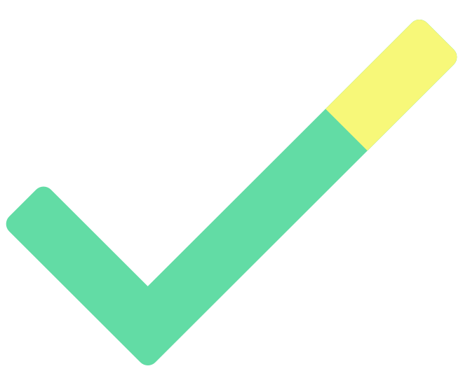

todometer
a meter-based to-do list for your desktop
-
Positive reinforcement: as you complete tasks, the
progress meter fills.
-
Paused items: feel free to put off things (again).
-
Out of sight, out of mind:
when you complete something, you don't have to think about it again.
-
Organize yourself:
edit and rearrange your tasks as you see fit.
-
Automatable:
local API, MCP, and todometer:// protocol for integration with other
tools (docs here).
-
Open source: find a bug?
Make an issue.